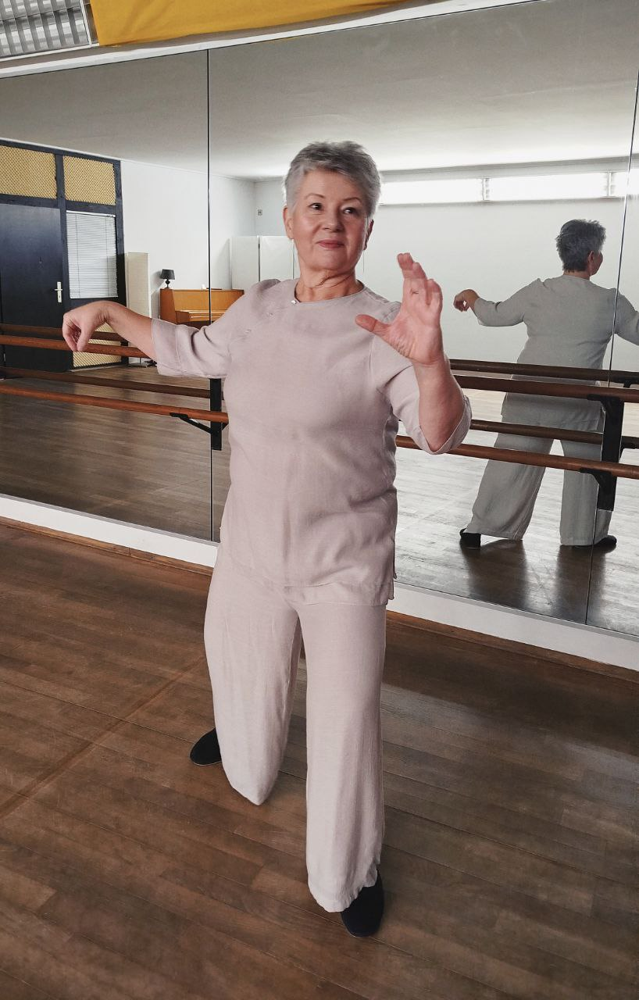
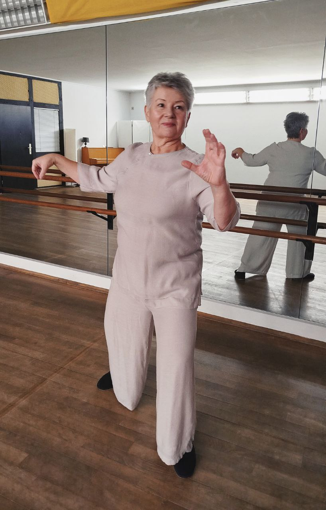

Qigong Kurse in Urdenbach
“Sehr abwechslungsreiches professionelles Training,- wirkt entspannend, fördert die Haltung, erhält das Gleichgewicht und macht Spaß.”
40593 Düsseldorf
(ehem. Ballettschule)
Mittwochskurs 18-19
Sonntagskurs 10-11 Uhr
Langsame, fließende und bewusst ausgeführte Bewegungsabläufe kennzeichnen diese aus dem alten China stammenden Übungen. In unserem Kurs werden sie hauptsächlich im Stehen praktiziert (aber auch im Sitzen möglich).
Oft wird Qigong „bewegte Meditation“ genannt. Es ist ein Training ohne Leistungsdruck in einer ruhigen entspannten Atmosphäre, die geistige Ruhe und Ausgeglichenheit fördert.
Der Kurs ist für Anfänger geeignet. Einstieg und
kostenfreie Probestunde sind jederzeit möglich.
Keine Vorkenntnisse / Erfahrung / Voraussetzungen notwendig.
Ihr solltet dabei lockere Kleidung („Pyjama“) und bequemes Schuhwerk
(keine Straßenschuhe) oder dicke Socken tragen.
Die Kursgebühr wird beim zweiten Termin, nach dem ersten
Probetermin, vollständig im Voraus bezahlt.
Wegen der begrenzten Teilnehmeranzahl ist eine Anfrage/Anmeldung zur
Probestunde per E-Mail notwendig.
Preise:
Probestunde (einmal pro Teilnehmer möglich): kostenfrei
75 € / 12 Mittwochs- bzw. Sonntagstermine*
* ca. 3 Monate, 12 reguläre Termine (mittwochs bzw. sonntags) nacheinander. Teilnehmer eines Kurses können den anderen kostenfrei besuchen. Bei der Buchung von Mittwochskurs ist kostenfreie Teilnahme sonntags inklusive (und umgekehrt). Versäumte Stunden verfallen.
Inhalte:
Shibashi (18 Übungen der Harmonie) gehört zu den verbreitetsten Formen weltweit und dient zum optimalen Einstieg in Qigong-Praxis.
8 Brokate:
Diese Übungen werden in China seit mehr als 2000 Jahren praktiziert, und man sagt ihnen eine besonders gesundheitsfördernde Wirkung nach. „Brokat“ bedeutet übersetzt etwas sehr Kostbares, von großer Schönheit, etwas von größter Wertschätzung.
Regelmäßig geübt, entspannt und stärkt man den gesamten Körper nachhaltig. Ohne Eile lernen wir das Üben und den Moment zu genießen. So können wir uns im Alltag geschützter und gelassener erleben.
Die 15 Ausdrucksformen nach Prof. Jiao (Qigong Tai Chi Shiwushi):
Der Ursprung dieser Übungen reicht bis in die Tang Dynastie (618 - 907 n.Chr.) zurück. Sie wurden von Prof. Jiao seit 1960er weiterentwickelt und sind heute ein fester Bestandteil der Qigong Yangsheng Tradition (Übung zur Gesundheits- und Lebenspflege).
Die Form überzeugt besonders durch ihre einfachen, anmutigen Bewegungen, die, konsequent geübt, eine sehr tiefe und andauernde Wirkung entfalten können. Wir erarbeiten uns die Form Schritt für Schritt und genießen das Erlernen der einzelnen Übungen, wie etwa „Der rote Drache spreizt seine Klauen“ oder „Zerteile die Wolken und halte den Mond“.
Der Kurs beinhaltet auch Vor- und Lockerungsübungen aus der anderen Tai Chi und Qigong Stilen.
Die Übungen werden von entspannter Meditationsmusik begleitet, abwechseln mit Phasen der Stille.
Über mich:
Ich komme ursprünglich aus Kiew, studierte in der Ukraine Biologie und Chemie. Seit 2005 arbeite ich als Chemikerin bei einem großen Konzern in Düsseldorf.
Über 10 Jahre übte ich Tai Chi unter der Führung von Hr. Dr. Gerhard Holmer. Dann entdeckte ich für mich Qigong und traditionelle chinesische Medizin (TCM). Die Begeisterung war so groß, dass ich eine Ausbildung als Qigong-Kursleiterin und TCM-Therapeutin im Shen Men Institut, Düsseldorf absolviert habe.
Seit 2022 leite ich Qigong-Kurse in Urdenbach und praktiziere selbst täglich. Mir ist es wichtig eine angenehme Atmosphäre im Kurs zu schaffen, daher versuche ich Balance zwischen dem genauen Ausführen der Übungen und Freude an der Bewegung zu finden. Wir sind alle verschieden und es ist nicht zu erwarten, dass es jedem und jeder gleich gut und einfach gelingt. Aber die lockere fröhliche Einstellung macht mögliche Anfangs-Schwierigkeiten zu keinem ernsten Hindernis.
Ich freue mich auf jede Stunde, genieße unser Zusammensein. Mein Ziel ist erreicht, wenn ich jemandem dabei helfen kann, ruhiger und gelassener durch das Leben zu gehen. Positive Wirkung auf allgemeine Beweglichkeit, Gleichgewicht, Koordination und dadurch auch mentale Gesundheit kommt hinzu.

 

Kontakt und Anmeldungen:
Yevgeniya Rimbach-Khersonska
E-Mail:
qigong.urdenbach@gmail.com
Rezensionen:
Geniya ist mit sehr viel Herzblut dabei und leitet uns während einer Übungsstunde mit viel Wärme und Konzentriertheit durch die Übungen. Sie gibt immer wieder Einblicke in die Philosophie des Qigong, erklärt Wirkungsweisen der Übungen ohne dabei missionierend zu sein.
Es ist zu einer bereichernden Gewohnheit geworden, zusammen mit tollen Teilnehmerinnen, den Himmel zu stützen, die Wolken zu teilen, wie eine Kiefer zu stehen und mit den Augen zu funkeln - möchte es nicht mehr missen!
— Sonja L.
Qigong mit Geniya ist etwas ganz Besonderes und tut mir einfach gut. Mit ihrer warmherzigen, positiven Art und ihrem Wissen führt sie durch die Stunde. Nach getaner "Arbeit" fühle ich mich entspannt und froh.
— Ingrid B.
Qigong mit Geniya macht mir sehr viel Freude.
Als Anfängerin bin ich begeistert von ihrem großen Wissensschatz im Bereich der chinesischen Energielehre, den sie in gut verdaulichen Portionen mit uns teilt. Geniya vermittelt die Übungen mit ansteckender Freude und Leichtigkeit. Die Tiefe der Wirkung der scheinbar einfachen Bewegungen ist nach kurzer Zeit deutlich fühlbar.
Ich bin dankbar für jede Stunde Qi Gong mit Geniya.
— Anne S.
Sehr angenehme Atmosphäre und herzliche Kursleiterin. Vielen Dank für die "sonntägliche Ruheoase"
— Mechthilde K.
Sehr abwechslungsreiches professionelles Training, wirkt entspannend, Haltungsfördernd, Gleichgewichtserhaltend und macht Spaß.
Die Trainerin versorgt einen auch gerne mit Übungsmaterialien in Form von Videos und Buchtipps.
— Sonja E.
Ich kann nur Positives berichten. Geniya ist sehr offen und zugewandt und hat ein freundliches Wesen. Sie macht es im Kurs auch Anfängern sehr leicht, und ist stets hilfsbereit.
Volle Empfehlung!
— Detlef G.
Qiqong mit Geniya ist eine Freude - einfühlsam und individuell geht sie auf uns ein und zeigt uns die Übungen - ohne Leistungsdruck und schulmeisterliche Anweisungen. Das ist wirklich wunderbar!
Geniya hat auch umfangreiche Kenntnisse über die körperliche Wirksamkeit von Qigong und dem Zusammenspiel der Meridiane! Das ist auch hilfreich, um zu verstehen, wie Qigong wirkt.
In der Gruppe macht es Spaß mit den anderen Qigong zu erlernen, es ist eine wohltuende und entspannte Atmosphäre - einfach sehr harmonisch.
— Walburga B.
Links:
Allgemeines zum Thema TCM — Tai Chi — Qigong
15 Ausdrucksformen nach Prof. Jiao
Tai Chi warm-up and gentle stretching exercises
Stretching-Yoga (sanfte effektive Übungen mit Yogabasics):
* Bitte beachten dass diese Links zu externen Webseiten führen.